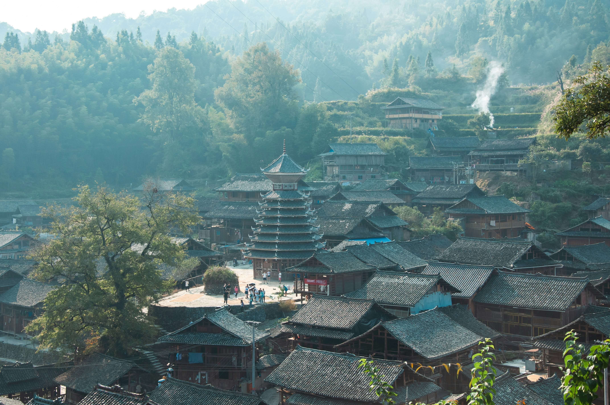
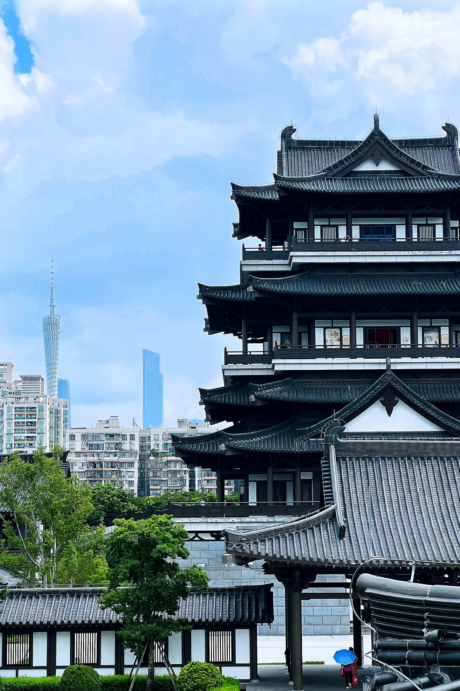

Asia - The World's Largest Continent

Overview
Asia is the largest and most populous continent on Earth, covering nearly one-third of the world’s land area. It is home to ancient civilizations, diverse cultures, and some of the world’s fastest-growing economies.
From the towering Himalayas and vast deserts of the Middle East to tropical rainforests in Southeast Asia and ultra-modern cities like Tokyo and Singapore, Asia offers extraordinary geographical, cultural, and historical diversity. The continent blends deep-rooted traditions with rapid technological advancement.
Key Facts
- Area: Approximately 44.58 million km²
- Population: Over 4.7 billion people
- Countries: 49 recognized sovereign states
- Major Languages: Mandarin Chinese, Hindi, Arabic, Japanese, Bengali, Korean, and hundreds more
Popular Countries to Visit
Discover some of the most fascinating and culturally rich destinations across Asia:
Japan

Capital: Tokyo
Japan is a unique country where ancient traditions blend seamlessly with advanced technology. Visitors can experience centuries-old temples, traditional tea ceremonies, and cutting-edge innovation all in one place.
Explore historic Kyoto, witness the beauty of Mount Fuji, enjoy the vibrant life of Tokyo, and experience Japan’s renowned cuisine and seasonal festivals.
Explore Japan in detail →
India

Capital: New Delhi
India is known for its rich cultural heritage, diverse religions, colorful festivals, and historical monuments. It is one of the world’s oldest civilizations with a history spanning thousands of years.
Visitors can admire the Taj Mahal, explore Rajasthan’s palaces, experience the spiritual atmosphere of Varanasi, and enjoy India’s world-famous cuisine and vibrant markets.
Explore India in detail →
China

Capital: Beijing
China is a vast country with one of the longest continuous histories in the world. It combines ancient landmarks with rapid modernization and global economic influence.
Walk along the Great Wall, explore the Forbidden City in Beijing, see the Terracotta Army in Xi’an, and experience the futuristic skyline of Shanghai.
Explore China in detail →
← Back to All Continents